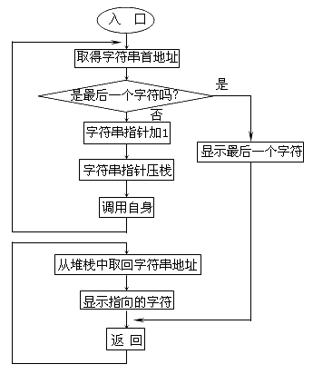
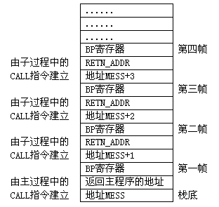

除了部分调用之外，过程还可以对其自身进行调用，这就是所谓的递归调用，而这样的过程称为递归过程。采用递归算法往往能编制出效率较高的程序，但要注意一点--待解决的问题要有递归定义。请看这样一个问题：如何将任意字符串按逆序印出？
问题十分简单，通常的方法是用BX（或其它）寄存器作为指针，指向最后一个字符，而后让指针递减，依次取出每个字符打印出来。下面的程序就是按这种思路编制的：
data segment
assume ds:data
mess db'Welcome to PC world!',0dh,0ah,24h
data ends
code segment cs:code
assume far
main proc ax,data
mov ds,ax ；初始化DS寄存器指向数据区
mov
mov dx,offset mess ；DX寄存器指向字符串MESS
mov ah,9
int 21h ；显示字符串MESS
mov cx,22 ；处理22个字符
mov bx,offset mess+21 ；BX寄存器指向字符串的末尾一个字符
loop1: mov dl,byte ptr [bx] ；取得末尾一个字符
mov ah,2 ；显示这个字符
int 21h
dec bx ；BX指向前一个字符
loop loop1 ；循环至LOOP1显示前一个字符
mov ah,4ch ；结束进程
int 21h
main endp
code ends
end main
这种解决问题的方法显得有点儿累，它不适合逆序显示任意长度的字符串。下面我们换一种思路来考虑这个问题。
这个问题可以分成两种情况：（1）字符串只有一个字符；（2）字符串有一个以上的字符。
对于第一种情况，我们只要将此字符显示出来即可，对于第二种情况，我们可以将多字符组成的字符串分解成"首字符＋其余字符组成的新字串"，那么逆序显示这个字符串的问题就变成了"先逆序显示'其余字符组成的新字串'，再显示'首字符'"。图5－2描绘出这个算法：

程序DISP2.ASM就是据此思路编制出的：
data segment
assume ds:data
mess db 'Welco me to PC world',0dh,0ah,24h
data ends
code segment
assume cs:code
main proc far
mov ax,data ；初始化DS寄存器指向数据段
mov ds,ax
mov dx,offset mess ；DX寄存器指向字符串
mov ah,9 ；显示这个字符串
int 21h
push dx ；字符串首地址压入堆栈
call disp ；调用DISP子过程进行逆序显示
mov ah,4ch ；结束进程
int 21h
main endp
disp proc near ；DISP子过程入口
push bp ；保存BP寄存器
mov bp,sp ；堆栈指针送入BP寄存器
mov bx,[bp+4] ；从堆栈中取得字符串指针
cmp byte ptr [bx+1],'$' ；判断指针指向的字符是否为最后一个
jnz not_end ；不是最后一个则转NOT_END
;#1部分 －－－－ 显示最后一个字符－－－
mov dl,byte ptr [bx] ；最后一个字符送入DL寄存器
mov ah,2 ；显示这个字符
int 21h
pop bp ；恢复BP寄存器
ret ；返回（实际将返回RETN_ADDR处）
;－－－－ －－－－
not_end:
inc bx ；字符串指针指向下一个字符
push bx ；字符串指针压入堆栈
call disp ；调用DISP子过程逆序显示剩余字符
;#2部分 －－－－显示上一个字符－－－
retn_addr
pop bx ；取回字符串指针
dec bx ；BX指向前一个字符
mov dl,byte ptr [bx] ；取得前一个字符
mov ah,2 ；显示前一个字符
int 21h
pop bp ；恢复BP寄存器
ret ；返回（反复返回至RETN_ADDR处，最后返
;－－－－－－－－ ；回至主过程）
disp endp
code ends
end main
"DISP"是这个程序的核心。主过程调用"DISP"之前先在堆栈中压入了一个指向字符串首的指针，"DISP"过程取得指针后首先判断此指针是否指向字符串的最后一个字符，若不是则将指针加一后压入堆栈并调用其自身。反复几次后堆栈中将形成如图5-3所示的一系列数据组。
我们把一次调用在堆栈中保存的数据称为一帧。当指针最终指向最后一个字符时，DISP将按第一种情况处理--执行"#1部分"程序显示最后这个字符。这部分程序结束时的RET指令使CPU返回至"#2部分"继续执行程序。这部分程序负责由堆栈中取回指针并将其减1，使其指向前一个字符，然后将这个字符显示出来。这一段程序结束时的RET指令仍然使CPU返回至"RETN＿ADDR"处，直至堆栈中所有数据帧处理完毕后DISP才真正返回到主过程。
